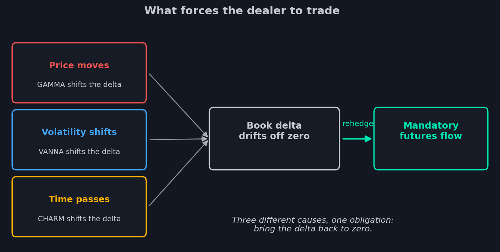

11. Tres fuerzas: gamma, vanna, charm
El mercado del SPX tiene costumbres que desconcertaron a los observadores durante
años. Una tarde tranquila de viernes — sin noticias, volumen fino — y el índice
repta obstinadamente hacia arriba. La volatilidad se drena tras pasar un evento —
y el mercado sube solo, como si alguien comprara metódicamente cada recorte.
¿Quién compra? Mira la cinta — nadie especial. La respuesta no se esconde en la
cinta sino en el horario: compra el MM, y no compra porque quiera — sino porque
debe.
Desde la lección 4 conocíamos una causa de sus obligaciones — el movimiento del
precio. Hora de completar el cuadro: son tres.
Una obligación, tres causas
La regla del MM no ha cambiado desde la lección 4: mantener la delta del libro en
cero. Pero la delta del libro es una magnitud viva, y el precio no es lo único que
puede sacarla del cero.

El precio se mueve — la delta del libro la desplaza la fuerza de la gamma. La
volatilidad se mueve — la fuerza de la vanna. No se mueve nada en absoluto,
simplemente corre el reloj — la delta deriva por el charm. Tres causas
distintas, una consecuencia: el libro se ha deslizado del cero, y el MM debe
operar futuros. La gamma ya la desmontamos por dentro y por fuera — su mapa GEX
muestra dónde la cobertura frena el precio y dónde lo acelera. Quedan por conocer
las dos fuerzas silenciosas. Ambas trabajan por el mismo mecanismo, así que
desmontémoslo una vez, sobre un libro concreto.
Toma el libro más típico del mercado: los clientes compraron puts en strikes por
debajo del mercado — el seguro de la lección 1 — y el MM, en consecuencia, vendió
esos puts. La delta de un put es negativa, así que la posición corta del MM carga
delta positiva: su libro tira hacia arriba, y para seguir neutral mantiene
futuros cortos. Recuerda esta disposición inicial — ambas fuerzas se
desplegarán sobre ella.
Vanna: la fuerza del miedo
Vanna responde a la pregunta: qué pasa con la delta si la volatilidad se desplaza.
Supón que el evento aterrador pasó y la IV baja — la campana de expectativas de la
lección 2 se contrae. Los puts fuera del dinero que bajo la campana ancha tenían
posibilidades reales ahora están casi sin esperanza: su delta se derrite a ojos
vista. Y con ella se derrite la delta positiva del libro del MM — el corto de
futuros que la equilibraba se ha vuelto excesivo. El MM debe recortarlo: comprar
futuros. En todo el mercado, en cada MM, al mismo tiempo.
Ahí está la respuesta al rally «sin causa» tras amainar el miedo: la caída de la
volatilidad genera por sí sola compras de los MM. El mercado llama a este
mecanismo vanna rally. También funciona al revés, y con más saña: un pico de IV
infla las deltas de los puts, a los MM de pronto les falta corto, y venden futuros
en un mercado que cae — encima de todas las demás ventas.
El mapa VEX de la lección anterior muestra esta fuerza por strike: exactamente
dónde el libro del MM es más sensible a un movimiento de la volatilidad — y, por
tanto, qué niveles «despertarán» cuando el VIX se desplace.
Charm: la fuerza del tiempo
Charm responde a una pregunta aún más extraña: qué pasa con la delta si no pasa
nada en absoluto.
Volvamos al mismo libro. El mercado está congelado, la IV quieta — pero el reloj
corre, y los puts fuera del dinero envejecen. Cada hora acerca el vencimiento, en
el que una opción fuera del dinero vale cero — y su delta ya está derivando hacia
cero (mira otra vez el gráfico de gamma de la lección 3: la curva de delta se
aprieta contra el escalón con cada día que pasa). La melodía ya la conoces: la
delta del libro se derrite — el corto de futuros sobra — el MM compra. Solo
por el paso del tiempo.
De ahí la segunda respuesta: la deriva del viernes por la tarde. Hacia el final de
la semana vencen series grandes, el decaimiento de la delta se acelera — recuerda
la theta de la lección 3, los últimos días arden más rápido — y la recompra de
coberturas por los MM se convierte en un viento de cola constante. El efecto es
tan regular que tiene nombre — charm flow. Pero no lo archives como «la fuerza que
tira hacia arriba»: la dirección la fija el libro. En el libro típico, donde los
clientes están sentados en puts de protección, el decaimiento tira del mercado
hacia arriba — de ahí la reputación de los días tranquilos previos al vencimiento
con su «extraña» inclinación. Pero si el sobrepeso de los clientes está en calls,
la misma mecánica corre en espejo: las deltas de los calls se derriten, los MM
venden su cobertura larga, y la deriva apunta hacia abajo.
Ahora superpón el mundo 0DTE de la lección 7. El charm antes juntaba fuerzas una
vez al mes, hacia el gran vencimiento del viernes. Ahora cada día vence alguna
serie — y el mismo cuadro se repite a diario: después de comer, las deltas de las
opciones que vencen hoy se derriten cada vez más rápido, el flujo forzoso de los
MM crece y llega a su pico justo en el cierre. El mapa CEX lo muestra por strike:
exactamente dónde el paso del tiempo hará operar a los MM, y en qué dirección.
Cómo leer las tres fuerzas juntas
Los tres mapas responden en registros distintos, y vale la pena decirlo en voz
alta. GEX describe el carácter del mercado: viscoso aquí o resbaladizo allá —
sin dirección; lo discutimos en la lección 4. Vanna y charm están construidos de
otro modo: son flujos direccionales condicionales. La fórmula de lectura dice:
«si la IV baja, los MM comprarán tanto en estos niveles»; «si el día pasa
tranquilo, para la tarde los MM habrán recomprado tanto». La condición es
obligatoria: si el escenario se invierte, el flujo también. El charm es en este
sentido el más honesto del trío: su condición — el paso del tiempo — se cumple
siempre.
Y la propiedad compartida para la que era todo el ejercicio: ninguna de las tres
fuerzas le pregunta su opinión al MM. Dado el libro, las tres se pueden calcular —
y el libro, minuto a minuto y sin adivinanzas, nos lo dio el feed de la lección 9.
Ahora tenemos tanto los datos como el idioma de las fuerzas. Queda ver cómo se ve
en un gráfico. La próxima lección cubre los indicadores de strikes del nuevo
paquete: un perfil de posicionamiento que hojea la historia como un libro, y un
mapa de calor donde cada strike vive su propia vida en el tiempo.
- La regla del MM es una — mantener la delta del libro en cero; tres fuerzas pueden sacarla: gamma (precio), vanna (volatilidad), charm (tiempo).
- Vanna: la caída de la IV seca la delta de los puts que compraron los clientes — los MM recompran la cobertura sobrante; así nace un vanna rally.
- Charm: el paso del tiempo crea por sí solo un flujo obligatorio; su dirección la fija el libro — en el típico libro cargado de puts la deriva es alcista; con sobrepeso en calls, bajista.
- GEX describe el carácter del mercado sin dirección; VEX y CEX son flujos direccionales condicionales — y la condición del charm se cumple siempre.